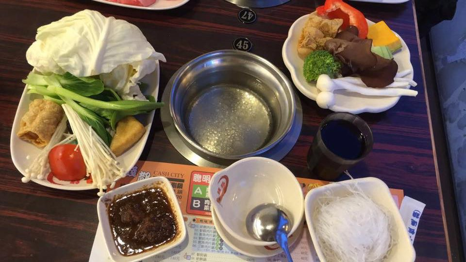
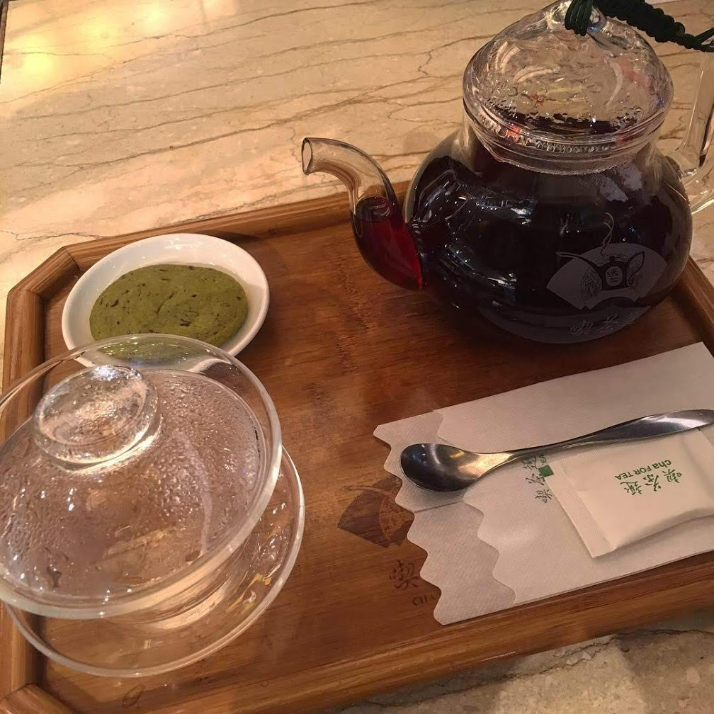
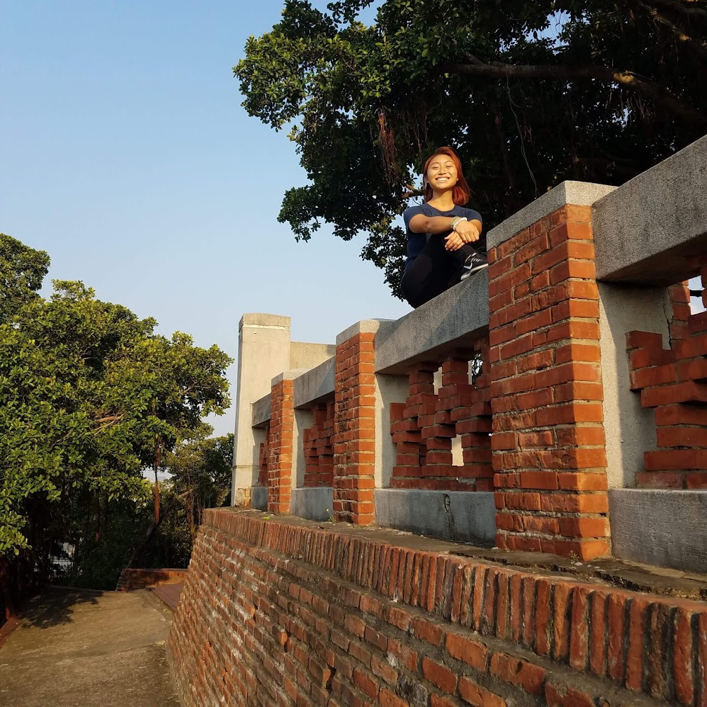

Part 2 of my 5-Week Asia trip! Check out what I packed here. Posts for my Thailand, Japan, and Korea complete this series!
This is actually our second trip to Taiwan, the first of which was back in 2016. I’ll be working in points from the previous trip into this post just to keep it all in one (: Taiwan is such an underrated vacation spot, but I would put it up there with Japan. And hey, if you’re in Japan, why not take a short flight to Taipei for a few days for loads of delicious food that won’t hurt your wallet?
Jump to specific sections: Basics, Taipei, Kaohsiung, Tainan, Ruisui
If you didn’t know, my mom’s hometown is Taipei. I grew up with Mandarin as my first language (only speaking though) and a bare understanding of Taiwanese. Taiwan is one of my favorite places to visit because the language and food are the most familiar to me. It’s a great place for budget traveling and eating, but more developed than Thailand. Taiwan boasts great Night Markets, Taiwanese breakfast places, and is the home of boba milk tea! The locals here are kind and have always been willing to help in my experience.
Basics
Weather
It was still fairly warm and humid in early October. Most days were sunny, and we didn’t encounter any rain while we were in Kaohsiung and Tainan. When we made our way to Taipei, there were a few overcast and rainy days, as well as cooler weather. A light jacket was nice to have on hand for the few days we spent there. My grandma joked that we brought the rain and cold because the weather was still muggy before we arrived in Taipei. If you’re traveling in late August to September, as I did in 2016, expect to be hit harder with the humidity. I’d recommend carrying a handkerchief or small towel to prepare yourself to sweat the second you step out the door. I fell in love with quick, cold showers twice a day.
Transportation
I will say this until the day I die, but Asia really does have some of the best transportation systems. First thing you should do when you get to the train station is to purchase an iPass from a ticket window. The card itself costs TWD$100 and you can load the card with money at the machines. That way, all you have to do is tap the card at the gates at the MRT or buses across Taiwan. You can even use them in convenience stores!
- Taipei MRT / Kaohsiung MRT: Clean, prompt, and always pumping AC. I’d say these are the easiest form of transportation to navigate, especially when used in conjunction with Google Maps. They’re great for getting to popular spots in their respective cities.
- Bus: Buses are cheap, but they can be a little confusing to take the right one. Due to street traffic, they aren’t always on time. However, they’re really good at going to specific stops where the MRT doesn’t reach or bring you close enough to.
- Railways: Not to be confused with the MRT. These trains take you across the tiny country. I’ve taken it from Zuoying Station (Kaohsiung) to Taipei Main Station, Taipei to Ruisui, and Kaohsiung to Tainan. I’ve never had trouble booking tickets in person at the stations, but it looks like you can do it online as well!
Food
This is honestly the main thing I come to Taiwan for, so expect lots of food pictures. Taiwan is known for its Night Markets, which you can find everywhere. Mom&pop stands and shops line the streets during the days along with a plethora of boba places. Like I mentioned in my Thailand post, be smart about the food you choose to consume. There’s not too much by ways of food sanitation for street stores, so if something looks sketchy, skip it.
A note on food poisoning: My partner got food poisoning from beef at a higher end dim sum place. That was partially because beef isn’t a common meat to order (shrimp is more “high class” or whatever) so we surmised the meat was probably sitting around for too long. In 2016 he also got a little sick because the humidity and the food were unfamiliar to his body. But if you encounter food poisoning, hopefully you brought your own medicines but it’s fairly inexpensive to see a doctor and get medicine. I kid you not it’s probably less than $20 USD so don’t be put off by the price. The doctor will probably prescribe a bunch of vitamins if you haven’t contracted anything serious. Get plenty of rest and grab some Pocari Sweat from the convenience store and sip on it while also drinking plenty of water. It’s the Asian version of a sports drink and it’ll help replenish your body. Rest and stay hydrated. Don’t be an idiot like me and push yourself too hard.
You’ll find inexpensive food on the streets, affordable meals in department stores, and higher end restaurants around Taipei. Here’s some things you should try out when you go (in addition to boba milk tea and night markets):
- Taiwanese breakfast: Please, please try Taiwanese breakfast when you come. They offer an experience that’s hard to find in America. I love all of the traditional breakfast dishes, and here are some to try:
- Salty soymilk (鹹豆漿) or sweet soymilk (甜豆漿) with Taiwanese donut (油條)
- Baked sesame pastry with egg (厚燒餅)
- Pan-fried scallion pancake with egg (蛋餅)
- Soup dumplings (小籠包) dipped in ginger vinegar soy sauce
- Mantou w/ optional egg (饅頭)
- Taiwanese bread: bakeries are everywhere. If you’ve never had Taiwanese style bread (think 85 Degrees Bakery), please give it a shot! There’s a range of sweet and savory breads that are perfect to take on the go or for long railway rides as snacks or quick meals.
- Braised pork rice bowl (滷肉飯): My grandpa’s favorite! This is a Taiwanese classic and you can find plenty of street vendors that sell this. Usually, it’s served with a soy sauce egg.
- Sweet Tofu Pudding (豆腐腦): Super soft silken tofu in a sweet syrup. You can choose various toppings like red bean, taro, barley, chickpeas, and peanuts to top it with. The cold version with shaved ice on top make it a great summer treat. The warm version is perfect for cooler weather.
- Shaved ice (礤冰): There’s two different kinds of Taiwanese shaved ice. My personal favorite is traditional shaved ice where it’s crushed ice with brown sugar syrup and condensed milk, and topped with the same things you put on sweet tofu pudding. The newer, more trendy shaved ice is more like flavored snow. It’s sometimes referred to as fluff ice. It can be topped with flan, condensed milk and look super Instagram worthy.
- Hot pot (火鍋): Once I had hot pot in Taiwan, I felt like Boiling Point was way overpriced. Just saying. Hot pot is a great dinner option to have with friends and family. Individual pots are popular not but family style single pots are still around. You get a good assortment of veggies, meat, and fish balls. A lot of hot pot places also offers free ice cream to cool off after you meal. 
Convenience Stores
If you’re familiar with Japanese convenience stores, you’ll love Taiwanese ones! They are nothing like 7-11 in America. Most Asian convenience stores sell basic items like makeup, soap, and even disposable underwear. The best part is that they sell a variety of “fast food” and drinks. There’s an assortment of fruit milks (try papaya or watermelon milk!) and so many tasty versions of soymilk. There’s food that’s freshly made every day like premade bentos, steamed buns, and self serve oden. If you choose one of the many instant noodles or frozen fried rice packs, the staff will heat it up for you! There’s usually a sitting area in these convenience stores for you to eat. It’s a great option for quick, inexpensive meals and snacks. I’ve seen students study here as well. I usually pick up a bottled water at the beginning of the day and refill it where I can.
Jump to specific sections: Top, Taipei, Kaohsiung, Tainan, Ruisui
Taipei
If it’s your first time in Taiwan, Taipei should be your first stop. It’s got all the best places easily accessible through the MRT, walking, and buses. There’s even a direct MRT route that takes you from Taoyuan International Airport into Taipei. Throughout Taipei you’ll find trendy, new department stores and restaurants as well as traditional mom&pop stores and food stands. Convenience stores like 7-11 and Hi-Life are practically on every block, and inexpensive random items being sold on the streets.
Accomodation
The first time we came, we stayed at my grandparent’s place in Datong District. This time, we stayed at an Airbnb in Sanchong District. Both were pretty close to and MRT entrance, so it made it easy for us to visit my grandparents. The Airbnb was clean, and there was a communal washing machine. No kitchen, but I wasn’t planning to cook in Taiwan anyway. The hot water boiler and mini fridge were enough.
Fun Places
- Tamsui: It’s a district right next to the sea and easily accessible by the MRT. My partner and I rented bikes to go to Lover’s Bridge and just enjoy the fresh air. It’s definitely cooler here than central Taipei. There’s also an alley market there selling food, clothes, and souvenirs. My great uncle recommended sitting in the Mr. Brown Coffee Shop there to have a nice view of the ocean.
- Jiufen: Supposedly the place that inspired a scene in Hayao Miyazaki’s Spirited Away. You have to take a bus to get there but it’s not that confusing. Don’t get scammed by the taxi drivers there. The first time I visited, I went with just my grandma during the day. We enjoyed the views and stopped by a cute coffee shop. Two weeks later, I came back with my friends during the late afternoon. A popular dessert here is sweet potato and taro balls, which every other vendor was selling.


- National Palace Museum: Go see the Meat Rock and the Taiwanese Cabbage Sculpture! I just found those two things so amusing. It’s a well kept museum. There’s an in-house restaurant that serves pretty decent food.
- Taipei Zoo/Maokong: What zoo has adult admission for $2 (TWD$60)??? The zoo is the final stop on the MRT and a fun place to visit. They have a panda show, llamas, and a cute tour bus that takes you around the zoo. A short walk away is the gondola to go up the Maokong. Both times I’ve gone on the gondola, it’s been cloudy but I love high places so the ride was enjoyable regardless. At Maokong, I like to eat tea-flavoured soft serve and buy Taiwanese tea leaves to take home.
- Lin Family Mansion and Garden: Despite the unmaintained pond, the rest of the Mansion was beautiful. It was pretty big and a pleasant spot to stroll around.
Food
- Tame Moose: Our favorite Western style cafe! We stumbled up on it 2 years ago since it’s so close to my grandparents’ house. They serve various coffee and tea drinks, Western style dishes, and delicious desserts. Their ‘dreams taste like cotton candy’ dessert is french toast and fruits, topped with a cloud of freshly spun cotton candy.
- NTU Hospital Food Court: Okay, this might sound weird but this was one of my favorite places to eat. There’s this vegan buffet style place there where you’re charged by the weight of your plate. The variety is great and the selection is curated by an in-house nutritionist. Besides that, this food court has a variety of options to choose from and it’s affordable and clean.
- Garden Terrace Buffet: I recommend going to their “afternoon tea” buffet. It’s cheaper than dinner, but still a huge buffet. The food selection varied and everything is good quality.
- Ningxia Night Market: Honestly, go to any night market in Taiwan. This one is a smaller one and not as crowded as the popular Shilin Night Market. Come here for dinner and fill up on tasty street food. Try grilled BBQ corn and popcorn chicken.
- Mos Burger: The only fast food place I’d ever eat at in Asia. I love their rice burgers, both the shrimp one and the veggie one.
- Ten Ren (also known as Cha for Tea): Fun fact-Cha for Tea was my favorite, go-to hangout spot in high school. Then it closed and never reopened ): It’s parent company, Ten Ren, never impressed me in America. In Taiwan, however, it’s a great place for a fancier, healthy set lunch or just a place for afternoon tea. Lots of aunties and grandmas come here to gossip. The lunch set comes with an appetizer, drink, entree set of choice, and an after-lunch tea with a sweet treat. Highly recommend.
- Chie Te: Great place to go and grab tasty souvenirs to bring back for your friends! They’re a popular brand known for their pineapple cakes (鳳梨酥), but they also sell a variety of traditional Taiwanese pastries. The stores do get really crowded with lines going out the door and a queue to get in. Another great store with similar products is I-Mei (my mom’s favorite).
Jump to specific sections: Top, Basics, Taipei, Tainan, Ruisui
Kaohsiung
The old capital of Taiwan! Kaohsiung seems to be in the process of renovating with more department stores, trendy food places, and a more modern train station. It’s definitely not as busy as Taipei, but it’s trying to get there. Our first few days in Taiwan were dedicated to slowing down and me healing from food poisoning from Phuket. Despite still being in the process of recovering from the food poisoning I incurred in Phuket, I thoroughly enjoyed adventuring around Kaohsiung and taking a day trip to Tainan.
Accomodation
The Airbnb we stayed at was very nice! It had AC, WIFI, and was clean and spacious. The room is located in a security guarded complex, and our kind host met us at the nearby 7-11 to give us the keys. The location was also convenient to reach from the airport via public transportation.
Fun Places
- Dadong Arts Center: We didn’t actually go inside but there were plenty of cute picture areas around the museum.
- Dragon and Tiger Pagodas + Night Market: A really lively Night Market right next to the water. Some things we picked up were fried mushrooms (probably dusted in MSG) and okonomiyaki. A kind grandma, who helped us get to the train station, also gave us some scallion pancakes.
- Anping Treehouse: A former warehouse with living banyan roots and branches that cover the building. Their gift store sells Taiwanese popsicles and drinks as well as interesting souvenirs like a little boba cup carrier.
- Anping Old Fort: Formerly known as Fort Zeelandia when the Dutch built it as an international trading center. It’s a fun place to run around and climb up towers. There’s a museum part with interactive activities and exhibits to learn about the Dutch history behind this place.
- Rareseed Ranch: A former warehouse with living banyan roots and branches that cover the building. Their gift store sells Taiwanese popsicles and drinks as well as interesting souvenirs like a little boba cup carrier.
- Pomelo Farm: So this was a destination we stumbled upon by chance because the owner of the farm, we call her Pomelo Grandma, called out to us weird Americans biking without sun protection in the Taiwan sun. We struck up a conversation and she invited us to check out her farm. We got to walk around the farm and Pomelo Grandma kindly gifted us pomelos, papaya, and dragon fruit. These people are just so sweet.
- Our hotel provided a buffet style Taiwanese breakfast. Basically rice porridge with sweet potatoes and a variety of side dishes to eat with it. They had Western options like toast and scrambled egg as well.
- 巷子口餃子館: A vegetarian restaurant run by a lovely couple. We’re so happy we stumbled upon this place. It was nice to chat with the owners (in my limited Mandarin) and they were impressed that we had come to Ruisui and that we enjoyed our time there. We also bought some of they homemade honey pomelo skins, which the wife kindly discounted for us. The food was delicious and had that home-cooked feeling to it.
Tainan
We took a day trip by taking the train from Kaohsiung to Tainan. We used the bus to get around the city. Biggest lesson today: remember to drink water or you’ll feel on the verge of passing out by late afternoon. After visiting the two Anping sites, we stopped by a nearby Tofu Pudding place to chill before heading back to our Airbnb.
Fun Places
Jump to specific sections: Top, Basics, Taipei, Ruisui
Ruisui
My partner really wanted to go to a hot spring and to Hualien, so my grandma helped us book a hot spring resort in a countryside town of Ruisui. Definitely not where we expected to go, but all the people in this little town were kind and generous. Lots of pomelo farms and other fruits everywhere. I’m glad we got the chance to explore this little place.
Accomodation
Hoya Hot Springs Resort and Spas: They had a lovely hot spring, that I enjoyed even though I’m not much for hot baths. I think the receptionist freaked out a little when we spoke English, but visibly relaxed when I switched to Mandarin.
Transportation
Because Ruisui is a pretty rural part of Hualien, the best way to get around is to bike. Our accommodation had bikes we could borrow, so we made good use of that. Remember to bring sunscreen and possibly a hat. Being American, I was wearing no hat and a tank top while riding my bike down the streets. Definitely attracted some weird looks from locals, who take care to cover up in the hot sun.
Fun Places
Food
Jump to specific sections: Top, Basics, Taipei, Kaohsiung, Tainan
Overall
Taiwan holds a special place in my heart and will always be one of my favorite destinations. I know this post is ridiculously long, so thank you if you read all of it. I wanted to share the things about Taiwan that don’t get talked about often enough. Yes, Taiwan has great night markets, boba milk tea, and Taipei 101 but also so much more. It’s an inexpensive country to travel in and the locals are nice people. Transportation is awesome, and honestly the few major cons are airplane tickets, humidity, and mosquitos. But those can be easily overlooked for all that Taiwan does have to offer, and it has yet to be ruined by tourists. Part of me wants it to stay this way but the other part of me wants people to see how wonderful Taiwan is too.
Back to Top ↺